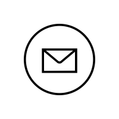

Abdallah Ali
Portfolio
Blog
Abdallah Ali
BSc CompSci student @ York University.

Courses
EECS1001: Research Directions in Computing
EECS1011: Computational Thinking Through Mechatronics
EECS1012: Net-centric Computing
EECS1021: Object Oriented Programming from Sensors to Actuators
MATH1090: Logic for Computer Science
EECS2021: Computer Organization
EECS2030: Advanced Object Oriented Programming
EECS2031:Software Tools (C & Unix)
EECS3461: User Interfaces
EECS2011: Fundamentals of Data Structures
EECS2001: Theory of Computation